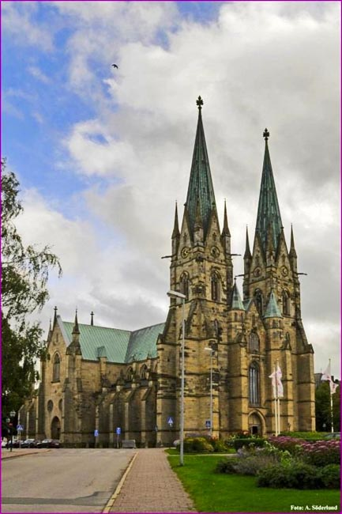

skara

enacademic.com EN RU DE FR ES Remember this site Dictionary of the Lithuanian Language Interpretations Translations Books
Dictionary of the Lithuanian Language
skara
skara: translationskarà sf. (4) Rtr ; SD 27, C I652, B 466, Sut , RtŽ , M 1. DŽ , Žg , Nmč , Kp , Pb , Jon didelė, ppr. vilnonė, skepeta pečiams, galvai apsigobti: Seniau moterys nešiojo skaràs, dabar jos iš mados išėjo Dj . Pasiimk skãrą, ba bus šalta Vv . Su tokia skarà nei vėjo, nei šalčio nebaisu Lš . Neturiu šiltos skarõs žiemai Al . Ji pasiėmė skarą, užsigobė, kad nebūtų šalta LTR ( Vdkt ). Išbėgo mergiotė be skarõs ir prasišaldė Ds . Skarà ir skarà [užsisupus] ana eina, jau pasenėjo Klt . Užsirišiau marguoja skarà Rš . Močia, būdavo, tai tik skãrą an galvos – ir Žiliuos Slm . Aš skaràs vis mezgu ir parduodu Mlk . Kaimiečių moterų daugiausia šaltymečiu ryšimosios skaros yra kur kas didesnės už skareles rš . Retukšlė skara LKG I577. Žvilgterėję akim da toliau, išvysma miškus, girias, kurios apriečia aną plotą, aną nelyginant skãrą ar patiestuvę brangiausią BM 61( An ). | prk. : Vėjas išblaškė paskutines debesų skaras rš . Bridau per miglų skaromis užklotas pievas rš . ^ Viena skara visų neapriši LTR ( Gdr ). 2. skarelė: Skepetą dabar visi skarà bevadina Žvr . Má[n] skarà tai liga (nemėgstu ryšėti) Jrb . Anojė sukerpė sau skãrą ant galvos J . Maulys, kurs, apsimaulinęs su bjaura skarà galvą, sėdi kertė[je] apsismurgliojęs J . Jų galvelės buvo užgaubstytos ir akelės skarõms uždangstytos JD 220. Apsirišiau skariutėlę ant baltos galvelės LTR ( Ob ). | Mirga plasta kaip ugnelės pionierių skaros S.Nėr . 3. Lex 60, C I1223, R , MŽ , N , K , DŽ 1 skuduras, skarmalas, skurlis: Mazgotuvė, skepetas nutrūkęs, nuskaręs vadinas skarà J . Kaip nuskarsi, turėsi daug skarų̃ J . Skaromìs apsileidęs sejonas, kad atskarusios padelkos J . Su tokia nečysta skarà parkirstą koją aptvėrei! Vkš . Atsiūlė[ja]u šitą savo skãrą, bus šaukštam šluostytie Aps . Kokią ten lėlę padirbsi iš skarų̃, iš skudurų kokių Krt . Šluostytinė skara SD 334. Nušluostymo skarà K I36. 4. ppr. pl. KlvrŽ vystyklas: Vyras ne (nei) skarõs yr skalavęs, ne pasturgaliuko šluostęs Rdn . Mergikei skaràs plauti nereik mokslo DūnŽ . Numaudė vaiką, suvyniojo į kokią skãrą ir paguldė DūnŽ . Atrado jį … skarose suvystytą SE 19. 5. RtŽ audeklo, marškos gabalas: Skara pirštuo tverti Kv . Rūgštą pieną į skaràs supilti i tverti [nusideginus] DūnŽ . Tai čia, tai ten matos nešamos sprogstančių medžių šakelės, plevėsuoja ant lazdų iškeltos raudonos skaros J.Bil . Viešpatie, štai grivina (svaras) tavo, kurią (kurį) turėjau išdėtą skaroje BtLuk 19,20. ║ nosinė: Skara šluostyk nosį O . 6. Plt prastas, sudėvėtas, suplyšęs drabužis: Drabužiai – vienos skãros DŽ 1 . Mūso visas anttrobis skarõms užverstas Dr . Tokia skarà tik skudurninkui gerai Sch 220. Jos vaikai kaip čigoniokai, rūbo nemato: ar skarõm, ar svetimais išaugtiniais Trgn . 7. ppr. pl. DŽ , Žsl , Al , Drsk , Lp , Lš drabužis, apdaras: Skãros ir viršutinės, ir apatinės Lzd . Reiks velėt skaràs Mrc . Apsivilkau naujom skarõm, apatinėm ir viršutinėm Kb . Be skarų̃ liko žmogus Kč . Labai skaràs sulijo Mrk . Tos skãros tep plyšta prie knibinio, kad nepaspėji nei aust, nei pirkt Srj . Nuog dūmų skãros aprūksta Rud . Koki tiej vaikai draskūnai, kad neroji jiem skaràs siūt Kpč . ^ Šienavok skãrą namie, tai tave šienavos žmonėsa Kb . 8. sing. S.Dauk , Kos 93, DŽ , Slnt , KlvrŽ , Brs , Ms pluoštas, drieka: Linų, kanapių skarà, arba plieka J . Linų skarà gera, kad neapsipakuloja, kad išnardo kaulus minant J . Linai yr gerai nusitaisę marko[je], tura gerą skãrą Krt . Paimi išmintų linų saują ir matai skãrą Plt . Skarà gera, gražios sruogos Krš . Sutęs nurauti [linus], išminti – prasta skarà DūnŽ . Iš dirvos linai – prasta skarà Pvn . ║ avižos varpa, šluotelė: Avižos tura gerą skarą, šiemet yra jos skarotos, duos gerą dagą Prk . 9. skaidula, plaušelis: Šaknis šakočiausia, iš daugybės skarų drūktų sudėta P . Skaros šaknių SD 107. ║ medienos rievė: Kiek atvejų [medžius] raižant, tiek reik veizėti, kaip skaros eit S.Dauk . 10. R 414, MŽ 558 (plaukų, vilnų) kuokštas. 11. C II1030 skiepijamoji šakelė. ◊ skaràs mèsti (sudė́ti) į kùpetą Sd tuoktis: Onė, mèskiav vedu skaràs į kùpetą Plt . Gal su ta sudė́siav skaràs į kùpetą, gal su ta gyvęsiam Trk . skãros per gálvą lẽkia apie labai suplyšusį žmogų: Skãros par gálvą lẽka Kal .
Dictionary of the Lithuanian Language .
skapšius skarabasLook at other dictionaries:
Skara — Skara … Deutsch Wikipedia
Skara — Cathédrale de Skara Administration Pays … Wikipédia en Français
skara — skarà dkt. Šilki̇̀nė, vilnõnė, megztà, žiemi̇̀nė skarà … Bendrinės lietuvių kalbos žodyno antraštynas
Skara — Skara, 1) Voigtei im schwedischen Län Skaraborg; hier der Berg Kinnekulle, der Blocksberg Schwedens; 2) Stadt hier, hat Bischof, Domkirche, Gymnasium, Bibelgesellschaft, Botanischen Garten, Thierarzneischule (die einzige in Schweden) u. 2200 Ew. … Pierer's Universal-Lexikon
Skara — Skara, Stadt im schwed. Län Skaraborg, an der Eisenbahn Stenstorp Lidköping (mit Abzweigung nach dem Wenersee), ist Bischofssitz (seit dem 11. Jahrh., der älteste Schwedens), hat eine Domkirche (12. Jahrh.), ein Gymnasium mit großer Bibliothek, … Meyers Großes Konversations-Lexikon
Skara — Skara, Stadt im schwed. Län. Skaraborg, (1900) 4431 E … Kleines Konversations-Lexikon
Skara — Skara, Stadt im Verwaltungsbezirk (Län) Skaraborg, Südschweden, 18 700 Einwohner; Sitz eines lutherischen Bischofs; Regional , Freilichtmuseum; Fremdenverkehr. Stadtbild: Domkirche (um 1150 und später; 1886 94 restauriert), nach Brand … Universal-Lexikon
skara- — *skara , *skaraz germ., stark. Maskulinum (a): nhd. Schar ( Femininum) (2), Pflugschar, Pflugeisen; ne. ploughshare; Rekontruktionsbasis: ae., afries., anfrk., mnd., ahd.; Hinweis: s. *skeran; … Germanisches Wörterbuch
Skara — Infobox Settlement official name = Skara image caption = Skara Cathedral image shield = Skara vapen.svg pushpin subdivision type = Country subdivision name = Sweden subdivision type1 = Municipality subdivision name1 = Skara Municipality … Wikipedia
Skara FC — Der Skara FC ist ein schwedischer Fußballverein aus Skara. Die Mannschaft des Vorgängervereins Skara IF spielte mehrere Spielzeiten in der zweithöchsten schwedischen Spielklasse. Geschichte Bei Einführung der schwedischen Ligapyramide im Sommer … Deutsch Wikipedia
© Academic, 2000-2020 Mark and share Search through all dictionaries Translate… Search InternetShare the article and excerpts
Direct link
… Do a right-click on the link aboveand select “Copy Link”
We are using cookies for the best presentation of our site. Continuing to use this site, you agree with this. OK